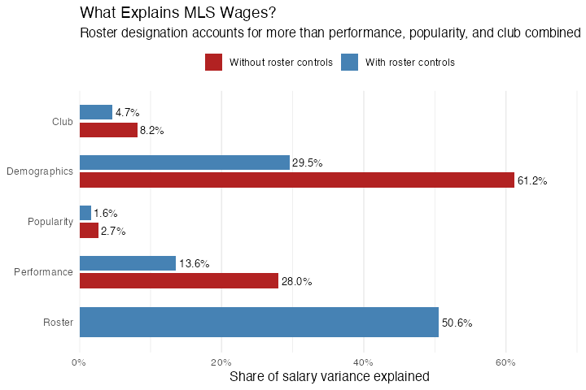
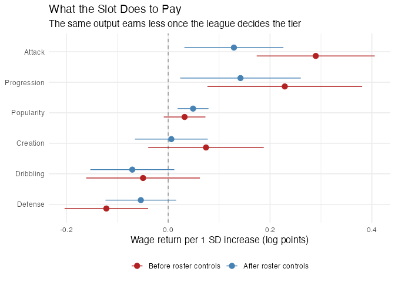
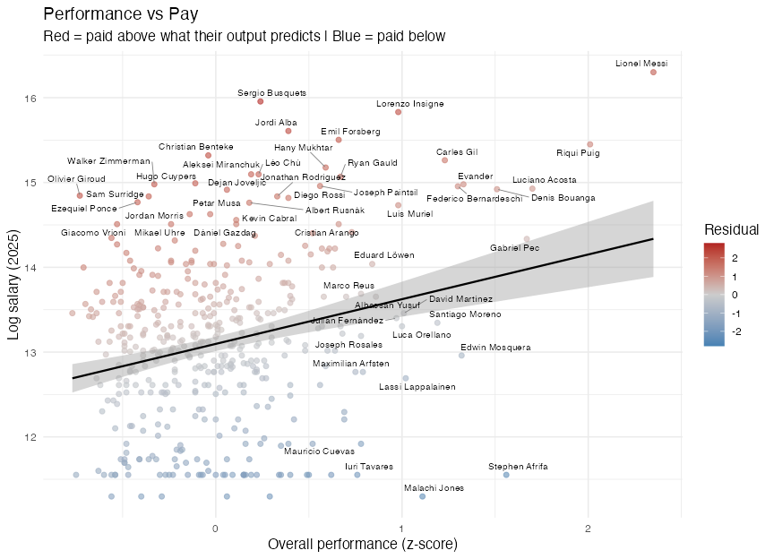
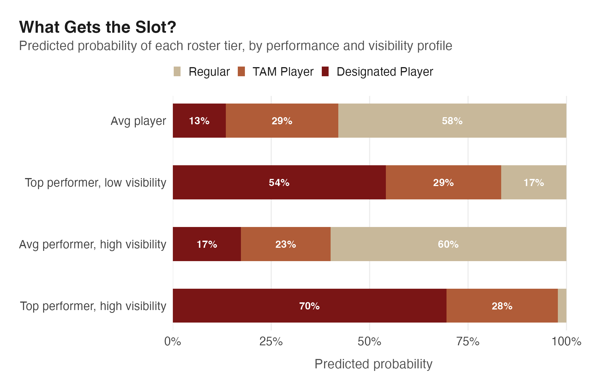
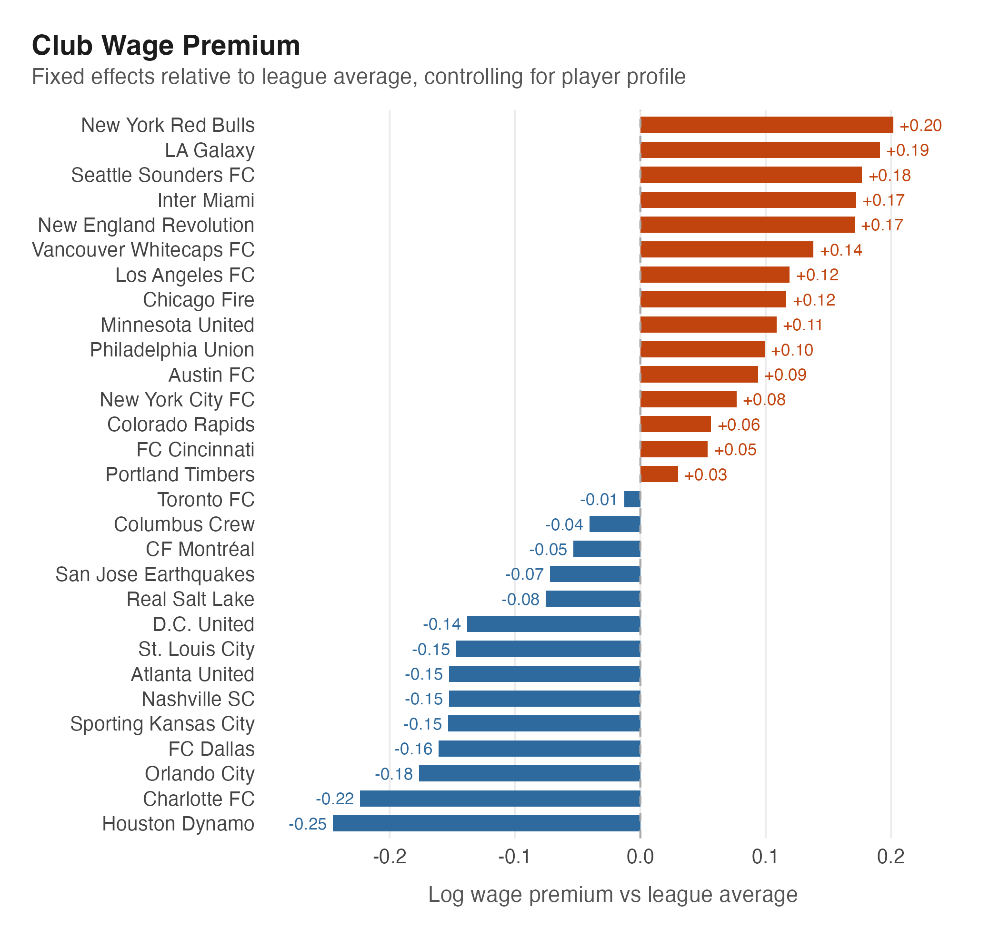

Watch enough MLS and a pattern emerges: spectacular goals, end-to-end attacks, highlight-reel moments– game after game. But the defending? Almost an afterthought.
In most labor markets, productivity drives pay. In top football leagues, this holds. The players most valuable to their team's success are priced accordingly– regardless of position.
MLS doesn't work that way. I analyzed 440 outfield players from the 2024 season to find out why.
Performance metrics come from FBref on a per-90 basis, salary and roster designation data from official MLS filings, and Google Trends search volume as a proxy for popularity. Multiple fixed-effects regressions isolate what actually drives wages.

Shapley decomposition of log salary variance — averaged across all variable orderings
Roster designation alone accounts for 37.6% of salary variance — more than performance, popularity, and club combined. The slot a player occupies is evidently the single strongest predictor of what they earn.
MLS is a unique market. It operates under a salary cap with roster categories that determine earning potential. Regular players are capped regardless of performance. Homegrown Players have similar limits. Designated Players are exempt from the cap; clubs can sign up to three at any salary. TAM and U22 Initiative slots allow clubs to pay above the cap within limits. This creates distinct wage bands.

Wage return per standard deviation improvement — before (red) and after (blue) controlling for roster designation
Each dot shows how much salary increases when a player improves by one standard deviation in a given area, roughly the difference between an average player and a notably strong one in that dimension. Red captures the total relationship. Blue shows what remains once roster tier is accounted for. The gap between them is what designation absorbs.
Attacking output is worth about 29% more in salary before the slot enters; after, 13%. Progression falls from 23% to 14%. Creation collapses to near zero. The slot absorbs roughly half of what attacking and progressive play would otherwise earn.
Popularity moves the other way: it strengthens slightly once designation is controlled for. Visibility doesn't pay directly. It gets a player into the tier that pays. Outside that tier, it earns almost nothing.
This is not a market failure. It is the market working as MLS designed it. The "visible" hand of the league's roster rules does precisely what a free market would not: decides in advance who can be paid, and how much.

Wage return per standard deviation, by performance dimension — controlling for club fixed effects
Attack and progression carry consistent wage premiums. Creation is marginal. Dribbling and defense earn nothing, and in some specifications, stronger defensive output is associated with lower wages. Granted, defense is about discipline; anticipating and preventing threats before they occur. But still an unusual result. MLS rewards what's visible and exciting– the final, visible actions over the less legible work that makes them possible. What's essential to success but harder to see is precisely what wins games in top leagues, and crucially, is rewarded.
The behind-the-scenes player is essential; as seen through the likes of Pedri (FC Barcelona), Elliot Anderson (Nottingham Forest), and Vitinha (Paris Saint-Germain). Quietly orchestrating play, collecting player-of-the-match awards, and being compensated accordingly.
Before, there was Spain and FC Barcelona icon, Sergio Busquets — a founding father of this role. Former Spain manager Vicente del Bosque had famously said: "You watch the game, you don't see Busquets. But if you watch Busquets, you see the whole game." Del Bosque gave the defensive midfielder his international debut in 2009. They would go on to win the World Cup the following year. Spain's first.
Busquets "completed football," winning every major trophy available to him at the club and international levels. Elliot Anderson, Pedri, Vitinha are young with bright futures and are not the only ones of this class. It's clear that this archetype of player is instrumental to success, correlated at the very least. The scatter below shows where MLS currently prices them.

Overall performance vs salary. Red = paid above what the full model predicts, blue = paid below.
The regression line shows what MLS pays for performance.
Messi sits top right: the one case where reputation and output genuinely converge. The highest popularity score in the dataset by a distance, and the performance to match. He is the exception, not the rule.
The more instructive cases are elsewhere. Riqui Puig couldn't get a game at Barcelona. In MLS he has flourished; an attacking midfielder who threads play from deep, unlocks compact defenses, and covers ground most tens don't. One of the highest progression scores in the dataset, $5.1 million as a Designated Player, before an ACL ended his season in the playoffs. Briefly, the slot and the player were perfectly matched. Gabriel Pec tells a different story. A winger who cuts inside, scores, creates, and presses relentlessly — MLS Newcomer of the Year, 16 goals, 14 assists, half of Europe watching. As a U22 Initiative player, $1.68 million regardless of what he produced. One of the highest overall scores in the dataset, structurally capped by the slot. Same league, same club as Puig, opposite sides of the color scale.
The quieter cases make the same argument without the marquee names. Stephen Afrifa, a forward at Sporting Kansas City who makes things happen in tight spaces: $104,000 on a Regular contract, overall score of 1.56. Max Arfsten, a wing-back at Columbus Crew whose defensive discipline and transition play were central to one of the league's most tactically coherent sides: $350,000, Regular slot, producing well above what the wage structure returns. No transfer rumors. No European pedigree. Just contribution the wage structure isn't paying for right now.
The red cluster tells the other side. Olivier Giroud, a centre-forward at LAFC who built a career on movement, hold-up play, and finishing when it mattered most. World Cup winner, Champions League winner, a career that belongs in any serious conversation about the best strikers of his generation. The 2024 output is ordinary. The wage is not.
Sergio Busquets is somewhere on this chart. $8.5 million, an overall score of 0.24; just above average by the model's measure. The gap between those two numbers is not an error. This piece made the case for what he represents. What the dot means, whether the market is paying for the career, the name, or something else entirely, is a question the data raises but doesn't answer. That tension is the point.
Right now the league prices what it needs to attract attention and build demand.
It's clear that designation drives pay. So then what drives designation? Are performance and visibility actually enough to get a player into the tier that pays?

Predicted probability of a Designated Player contract — by performance tier and public visibility
An average player with average visibility has an 8% chance of a Designated Player contract. A top performer with low visibility: 39%. An average performer with high visibility: 11%. A top performer with high visibility: 48%. Performance matters more than visibility for getting the slot, but neither alone is sufficient, and both together barely cross the threshold. To put these numbers in context: "top performer" here means two standard deviations above the league average, roughly the level of a Luciano Acosta or a Carles Gil. "High visibility" means similarly elevated public attention, but well short of Messi territory. Even at those levels, fewer than half of players land a Designated Player contract.
Age and position shape the outcome further, and this is where the analysis becomes most telling. The model peaks around 30 to 31; prime-age veterans are substantially more likely to land higher-tier slots than equally productive younger players. This reflects how MLS clubs actually think about designation: not purely as a reward for current output, but as a commercial decision. An established name at 31 sells tickets and drives broadcast interest in a way a 24-year-old with equivalent numbers typically does not.
Attackers and attacking midfielders are strongly favored for DP slots. Defenders are not, regardless of what their numbers say. A central defender who is among the best in the league at what they do, who wins duels, reads danger, anchors an entire structure, has a substantially lower probability of a DP contract than an attacker with comparable output scores. The designation system does not neutrally evaluate contribution. It reflects commercial priorities baked into the rulebook. Whether the league eventually revises those priorities will determine whether the tactical quality gap between MLS and the world's top leagues narrows.
Performance and visibility open the door. Age and position decide how wide.
MLS assumed a calculated risk: prioritize growth and entertainment to build demand first, and worry about quality later. The wage structure reflects that choice, rewarding visibility over productivity, attack over defense. It's working. The league is bigger, richer, and more visible than ever; and the rate of this growth has never been higher.
The side effect is systematic underpricing of what makes a team good. When wages are set by a visible hand rather than a free market, the distortions are deliberate. So are the consequences. Young defenders and midfielders find limited earning potential unless they leave for other leagues. Sticky wages create real opportunity cost; if players can't earn their market value, some of that talent goes elsewhere, and it compounds.
Some clubs have already worked out how to exploit the gap between what gets priced and what actually wins.
The gap between what the wage structure prices and what actually wins games is not theoretical. Some clubs have already found it.
The chart below shows which clubs consistently pay above or below the league average for the same player profile: not a payroll ranking, but a measure of efficiency.

Club wage premium or discount, relative to league average — controlling for squad composition, not total payroll
The clubs on the left of that chart share something beyond wage discipline. They've built systems that win games through the things the wage structure doesn't price.
Vancouver built their 2024 season around a simple idea: win the ball in midfield, transition before the opposition can set, and let the attacking midfielder do damage in the space created. Berhalter sits at the base of that structure, not glamorous, not a name that moves merchandise, but the reason it functions. He wins duels, moves the ball simply, covers the ground that makes everything else possible.
Columbus Crew finished with the highest points total in the league. Their midfield controls tempo, wins the ball, and uses it; a deep-lying playmaker as the stabilizing force, a box-to-box midfielder providing energy on both sides of the ball, and Arfsten operating as a wing-back who drops into central midfield when the shape demands it. What makes Columbus hard to play against isn't any individual. It's that their players understand their role so completely that the system holds its shape even as it shifts.
These clubs aren't doing anything revolutionary. They're taking seriously the things the market has decided not to price: defensive organization, positional discipline, players who make the system work rather than players who work despite the system. The gap is real. For clubs willing to look where others aren't, it's an opportunity.
2024 MLS Regular Season — sorted by wage premium (chart above)
Note: wage premium reflects each club's fixed effect relative to league average, controlling for squad composition — not total payroll.
| Club | Wage | Pts | W | L | D | Playoff result |
|---|---|---|---|---|---|---|
| ▲ Above market | ||||||
| New York Red Bulls | +high | 47 | 11 | 9 | 14 | Lost MLS Cup Final |
| LA Galaxy | +high | 64 | 19 | 8 | 7 | 🏆 Won MLS Cup |
| Seattle Sounders FC | +high | 57 | 16 | 9 | 9 | Lost Conference Final |
| Inter Miami | +high | 74 | 22 | 4 | 8 | Lost First Round |
| New England Revolution | +mid | 31 | 9 | 21 | 4 | Missed playoffs |
| Vancouver Whitecaps FC | +mid | 47 | 13 | 13 | 8 | Lost First Round |
| Los Angeles FC | +mid | 64 | 19 | 8 | 7 | Lost Conference Semi |
| Chicago Fire | +mid | 30 | 7 | 18 | 9 | Missed playoffs |
| Minnesota United | +mid | 52 | 15 | 12 | 7 | Lost Conference Semi |
| Philadelphia Union | +mid | 37 | 9 | 15 | 10 | Missed playoffs |
| Austin FC | +low | 42 | 11 | 14 | 9 | Missed playoffs |
| New York City FC | +low | 50 | 14 | 12 | 8 | Lost Conference Semi |
| Colorado Rapids | +low | 50 | 15 | 14 | 5 | Lost First Round |
| FC Cincinnati | +low | 59 | 18 | 11 | 5 | Lost First Round |
| Portland Timbers | +low | 44 | 12 | 14 | 8 | Lost First Round |
| ▼ Below market | ||||||
| Toronto FC | −low | 34 | 9 | 18 | 7 | Missed playoffs |
| Columbus Crew | −low | 66 | 19 | 6 | 9 | Lost First Round |
| CF Montréal | −low | 44 | 13 | 14 | 7 | Lost First Round |
| San Jose Earthquakes | −low | 26 | 7 | 21 | 6 | Missed playoffs |
| Real Salt Lake | −mid | 59 | 16 | 7 | 11 | Lost First Round |
| D.C. United | −mid | 35 | 9 | 18 | 7 | Missed playoffs |
| St. Louis City SC | −mid | 37 | 8 | 13 | 13 | Missed playoffs |
| Nashville SC | −mid | 36 | 9 | 16 | 9 | Missed playoffs |
| Atlanta United | −mid | 40 | 10 | 14 | 10 | Lost Conference Semi |
| Sporting Kansas City | −mid | 31 | 8 | 19 | 7 | Missed playoffs |
| FC Dallas | −mid | 41 | 11 | 15 | 8 | Missed playoffs |
| Orlando City | −mid | 52 | 15 | 12 | 7 | Lost Conference Final |
| Charlotte FC | −high | 51 | 14 | 11 | 9 | Lost First Round |
| Houston Dynamo | −high | 54 | 15 | 10 | 9 | Lost First Round |
Messi's arrival created genuine demand the league had been chasing for decades. Once it existed, clubs had to compete to retain it. Atlanta United beating the Supporters' Shield winners in the 2024 first round, 40 points and a disciplined defensive block, was a signal. Winning requires something the wage structure has not historically rewarded.
The exceptions, clubs like Vancouver and players like Berhalter, show another path exists. As the league matures, the question is whether more clubs follow that path, or whether the incentive to chase spectacle continues to dominate. The future is bright. It is simply a matter of when, not if.